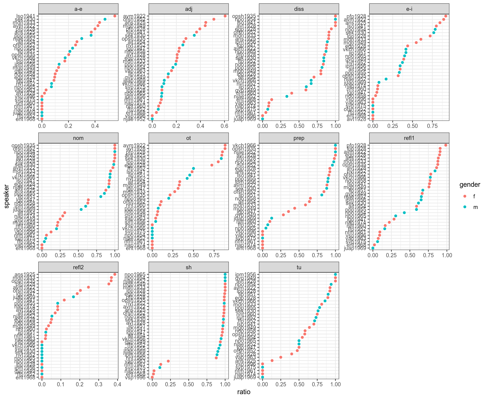

8 Эмпирическая байесовская оценка
library(tidyverse)Метод жмпирической байесовской оценки (Empirical Bayes estimation) — один из байесовских методов, в рамках которого:
- производят оценку априорного распределения вероятностей на основании имеющихся данных
- используют полученное априорное распределение для получение апостериорной оценки для каждого наблюдения
Рассмотрим пример данных из статьи (Daniel et al. 2019), в которой аннализировались интервью с людьми из деревени Махалёвская и анализировали ряд консервативных и инновативных черт в их речи.
mikhalevskaja <- read_csv("https://raw.githubusercontent.com/agricolamz/2021_da4l/master/data/ustya_data.csv")##
## ── Column specification ────────────────────────────────────────────────────────
## cols(
## speaker = col_character(),
## year = col_double(),
## gender = col_character(),
## conservative = col_double(),
## innovatuve = col_double(),
## total = col_double(),
## feature = col_character()
## )glimpse(mikhalevskaja)## Rows: 359
## Columns: 7
## $ speaker <chr> "avm1922", "ans1925", "avt1928", "egp1928", "lpp1928", "…
## $ year <dbl> 1922, 1925, 1928, 1928, 1928, 1928, 1930, 1933, 1935, 19…
## $ gender <chr> "f", "f", "f", "f", "f", "f", "m", "f", "f", "f", "f", "…
## $ conservative <dbl> 92, 56, 12, 33, 2, 83, 22, 22, 33, 60, 58, 11, 55, 8, 30…
## $ innovatuve <dbl> 60, 70, 46, 127, 23, 127, 41, 88, 85, 103, 200, 73, 70, …
## $ total <dbl> 152, 126, 58, 160, 25, 210, 63, 110, 118, 163, 258, 84, …
## $ feature <chr> "adj", "adj", "adj", "adj", "adj", "adj", "adj", "adj", …Представим себе, что мы решили задаться целью найти наиболее диалектных носителей:
library(tidytext)
mikhalevskaja %>%
mutate(ratio = conservative/total,
speaker = reorder_within(speaker, ratio, feature)) %>%
ggplot(aes(ratio, speaker, color = gender))+
geom_point()+
facet_wrap(~feature, scales = "free")+
scale_y_reordered()